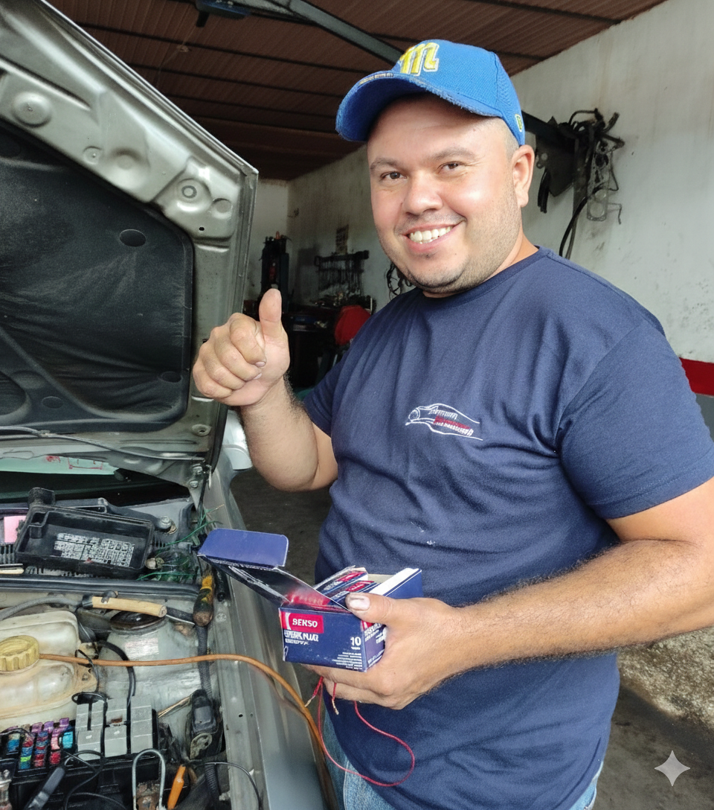

Se ofrece agenda de citas en línea y seguimiento de reparaciones en tiempo real.
Solicitar Cita AhoraDiagnóstico y Preventivo
Mantenimiento Rápido
Optimización de Desempeño
Trabajos de Motor y Mayor

Se utiliza tecnología de vanguardia para identificar requerimientos exactos, optimizando tiempo y costos para el cliente.
Cada repuesto y proceso técnico cumple con los estándares más exigentes del sector automotriz nacional.
Se entregan informes detallados de cada intervención; el usuario mantiene siempre el control sobre su inversión.
El equipo no solo repara vehículos, sino que garantiza la seguridad y tranquilidad de los conductores en cada kilómetro.